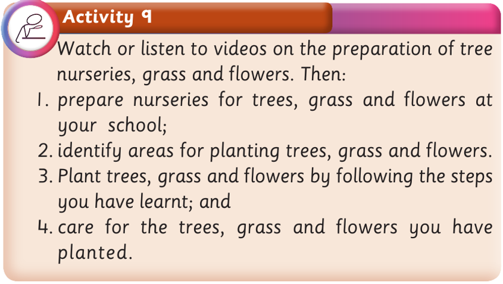

Activity 9
Watch or listen to videos on the preparation of tree nurseries, grass and flowers.
Then:
1. prepare nurseries for trees, grass and flowers at your school;
2. identify areas for planting trees, grass and flowers.
3. Plant trees, grass and flowers by following the steps you have learnt; and
4. care for the trees, grass and flowers you have planted.